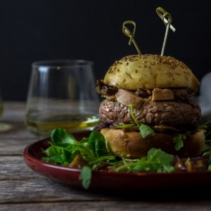

Burgers tournedos Rossini

Me voilà avec une nouvelle recette à 100% dans l’esprit des fêtes et surtout ultra gourmande car il s’agit de la recette des burgers façon tournedos Rossini!!
Je me doute que pour un Noël en famille ce n’est pas une recette classique que l’on a l’habitude de servir mais je peux vous dire que pour l’apéro en version mini c’est absolument parfait. Mieux encore, pour un réveillon entre amis je pense que c’est LA recette à faire absolument, ou encore en famille devant de bons petits films de Noël (bref, je suis sûre que vous trouverez une excuse pour faire ce burger pendant les fêtes!!). Depuis que je cuisine le tournedos Rossini c’est devenu un incontournable chez nous en période de fêtes. Vous pouvez d’ailleurs retrouver la recette version « classique » du tournedos Rossini ICI (absolument divin!!).
Ici, j’ai réadapté ma recette pour en faire de délicieux burgers et j’avais vraiment trop trop hâte de partager la recette avec vous. Il faut dire que des burgers tournedos Rossini c’est ce qu’il y a de plus gourmand pour moi et dès que l’occasion se présente (fêtes de fin d’années, St Valentin, anniversaires etc…) c’est un des plats qui se trouve rapidement en tête de liste. Deux tranches de pains maison (car oui, là vous ne pouvez pas ne pas faire le pain à hamburger vous-même ça gâcherait vraiment le tout^^), des champignons (choisissez des cèpes ou un mélange de champignons forestiers), de la sauce madère (ou porto), des steaks à l’huile de truffe et de délicieux oignons rouges confits… Bref, c’est juste à tomber! Je peux vous dire que ce burger a été imaginé, dessiné et goûté par une équipe de grands gourmands alors vous ne serez pas déçus si vous vous lancez dans la recette.
A l’heure où cet article se publiera je serai sans doute encore à New-York certainement quelque part entrain de manger un « american burger » et je doute que l’on trouvera des burgers tournedos Rossini mais qui sait!! En attendant de vous raconter tout ça, je vous laisse avec cette recette absolument gourmande et si vous vous lancez n’hésitez pas à me faire un petit retour 🙂 A très vite!!
Ingrédients
- Steaks hachés de chez le boucher - 4 steaks de 180g
- Foie gras - entre 40 et 60g
- Huile de truffe
- Poivre noir
- Pains hamburgers - 4
- Champignons (cèpes, bollets, giroles etc...) - 350g
- Oignons rouges - 2
- Sucre blanc (ou cassonnade) - 1 càs et demi
- Fond de veau - 75ml
- Vin de Maddère ou Porto - 30ml
- Foie gras - 100-120
- Sucrine ou roquette (ou salade de votre choix) - quelques feuilles
Instructions
- Couper des morceaux de foie gras (compter environ 15 à 20g par steaks de 180g chacun)
- Les incorporer au steak et reformer les steaks
- Poivrer et arroser les steaks d'huile de truffe
- Laisser au frais dans une assiette recouverte de film alimentaire pendant une nuit (ou une une bonne heure si vous n'avez pas le temps)
- Couper les pains en deux
- Poser les steaks sur du papier absorbant
- Couper les oignons en fines lamelles
- Faire suer les oignons dans un poêle sur feu moyen-doux
- Quand ils commencent à devenir translucides ajouter le sucre et laisser cuire à feu très doux pendant 15-20 minutes (surveiller la cuisson et remuer régulièrement)
- Une fois les oignons cuits, les sortir du feu et réserver
- Faire revenir les champignons dans un peu d'huile d'olive à feu doux
- En même temps, cuire les steaks avec une noix de beurre ou avec un peu d'huile d'olive Si vous utilisez du foie gras en terrine, découper des morceaux de foie gras d’environ 25 à 30g et en fin de cuisson , posez-les sur les steaks
- Quand les steaks sont cuits, réservez-les dans une assiette et couvrez de papier aluminium pour garder la chaleur
- Déglacer la poêle avec le fond de veau puis ajouter le vin de Madère (ou à défaut le porto)
- Fouetter pendant 4 bonnes minutes jusqu'à ce que le mélange épaississe
- Une fois la sauce a épaissit ajoutez-la aux champignons et mélanger pour que les champignons s’imprègnent bien de la sauce
- Sortir du feu et réserver
- Placer vos buns côté mie dans la poêle où se trouvait la sauce et laissez-les griller 1 à 2 minutes (surveiller car ça peut vite brûler!!)
- Sur les buns placer un peu de salade, des oignons confits, un peu de champignons
- Sur les champignons ajouter le steak surmonté de sa tranche de foie gras (si vous avez utilisé du foie gras en terrine) Si vous n'avez pas utilisé de foie gras en terrine mais des escalopes de foie gras, au moment du montage, faire griller vos escalopes dans un poêle chaude 1 min de chaque côté puis placez-les sur les steaks
- S'il vous reste des champignons ajoutez-les par dessus et fermez avec le chapeau
- Vous pouvez les placer au four à 100° pendant 5 minutes pour réchauffer l'ensemble avant de servir...
- Bon appétit!!
Les tips de la communauté
Excellente réception pour ce burger gourmand fusion. Les photos sont très admirées et l'idée d'adapter le tournedos Rossini en burger séduit vraiment les lecteurs.
Astuces
- Les photos sont exceptionnelles et donnent très envie
- Le concept de tournedos Rossini en burger est original et apprécié
- Élégant tout en étant décontracté, parfait pour les occasions
Variantes suggérées
- vegan! Avec du FAUX GRAS pour ceux et celles qui comme moi ne mangent pas de foie gras. Très belle réalisation ce burger! Bises et Bonnes Fêtes!